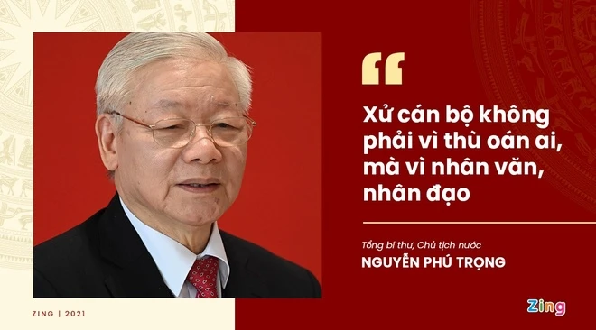
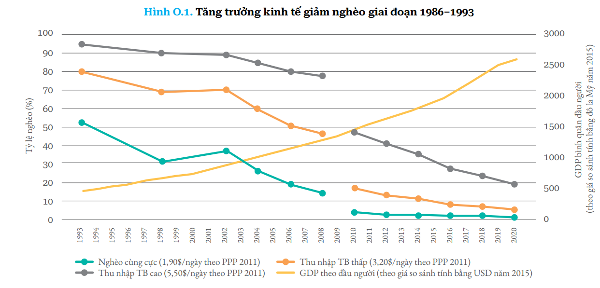

NHỮNG
CHẶNG ĐƯỜNG VẺ VANG
CỦA ĐẢNG
Hành trình 35 năm đổi mới và phát triển
Một hồ sơ trực quan phân tích nhận định của Tổng Bí thư Nguyễn Phú Trọng bằng dữ liệu, sự kiện, văn kiện Đại hội và góc nhìn biện chứng.
Nhận định này về cơ bản phản ánh một thực tế khách quan, nhưng chỉ đúng khi đặt trong so sánh lịch sử dài hạn và không tuyệt đối hóa thành tựu.

“Phát biểu tại Đại hội XIII, Tổng Bí thư Nguyễn Phú Trọng khẳng định: ‘Đất nước ta chưa bao giờ có được cơ đồ, tiềm lực, vị thế và uy tín quốc tế như ngày nay.’ Nhìn lại hơn 35 năm đổi mới, theo nhóm bạn, nhận định này phản ánh một thực tế khách quan hay còn có những thách thức, giới hạn cần nhìn nhận thấu đáo hơn? Hãy sử dụng dữ liệu, sự kiện và minh chứng cụ thể để chứng minh, phân tích hoặc phản biện nhận định trên.”
Nhận định “Đất nước ta chưa bao giờ có được cơ đồ, tiềm lực, vị thế và uy tín quốc tế như ngày nay” về cơ bản phản ánh một thực tế khách quan, nhưng chỉ đúng khi hiểu đó là một kết luận ở tầm tổng thể lịch sử, đặt trong so sánh với điểm xuất phát rất thấp của Việt Nam trước Đổi mới.
Nó không nên được hiểu theo nghĩa tuyệt đối hóa, như thể mọi vấn đề phát triển đã được giải quyết xong hoặc đất nước đã phát triển thật sự bền vững trên mọi phương diện.
Nếu đặt bên cạnh xuất phát điểm đó, thì việc Việt Nam thoát khủng hoảng, ổn định xã hội, mở cửa hội nhập và nâng tầm vị thế quốc tế là một bước chuyển lịch sử rất lớn.
Hành trình 35 năm đổi mới và phát triển
Năm 1986, đất nước rơi vào khủng hoảng kinh tế - xã hội nghiêm trọng. Hàng hóa khan hiếm, lạm phát tăng vọt.
Đổi mới là đòi hỏi bức thiết của tình hình đất nước. Lạm phát tăng từ 300% năm 1985 lên 774% năm 1986.

Về thành tựu kinh tế - xã hội, nhận định trên có cơ sở khá rõ. Chính giáo trình khẳng định sau hơn 30 năm Đổi mới, Việt Nam đã chuyển từ cơ chế kế hoạch hóa tập trung, quan liêu, bao cấp sang nền kinh tế hàng hóa nhiều thành phần vận hành theo cơ chế thị trường có sự quản lý của Nhà nước.
Việt Nam đã trở thành một nền kinh tế năng động, có sức hút đáng kể với bên ngoài. Không còn là một nền kinh tế đóng kín hay đứng ngoài các chuỗi liên kết toàn cầu.
Tính đến cuối năm 2024:
Nếu so với một Việt Nam từng bị bao vây, cấm vận và cô lập, thì “vị thế” và “uy tín quốc tế” hôm nay là một bước tiến lớn.
Quốc gia có quan hệ ngoại giao
Hiệp định thương mại tự do (FTA)
Đối tác toàn diện hoặc cao hơn
Nền thương mại lớn nhất thế giới (2025)
Thành viên Hội đồng Nhân quyền LHQ (2026-2028). Quan hệ Đối tác chiến lược toàn diện với cả 5 nước thường trực HĐBA LHQ.
Theo WIPO, Việt Nam đứng thứ 44/133 nền kinh tế trong Global Innovation Index 2024, xếp thứ 2 trong nhóm nước thu nhập trung bình thấp.
Đây là một dấu hiệu cho thấy “tiềm lực” của Việt Nam không chỉ nằm ở thương mại đơn thuần, mà còn ở năng lực công nghệ và khả năng thích ứng với sự biến đổi của thời đại.
Nếu chỉ dừng ở mặt khẳng định mà không nhìn rõ giới hạn, nhận định trên sẽ trở nên một chiều.
Tiềm lực kinh tế lớn hơn trước nhưng chất lượng phát triển chưa thật vững. Năng suất lao động và sức cạnh tranh còn là vấn đề. Hội nhập sâu tạo sức ép cạnh tranh gay gắt.
Vị thế quốc tế tăng nhưng Việt Nam vẫn là nước thu nhập trung bình thấp trong giai đoạn chuyển tiếp. Còn chặng đường dài để lên thu nhập trung bình cao (2030) và thu nhập cao (2045).
Việt Nam là một trong những quốc gia chịu ảnh hưởng mạnh nhất. Năm 2020 thiệt hại khoảng 10 tỷ USD (3,2% GDP). WB cảnh báo tác động có thể làm giảm 12,5% GDP vào năm 2050.
Chưa có cụm khoa học - công nghệ nào nằm trong Top 100 toàn cầu năm 2024. Cần chuyển mạnh hơn sang tăng trưởng dựa vào năng suất, tri thức và công nghệ lõi.
Nhận định của Tổng Bí thư là đúng về xu thế lớn và đúng trong so sánh lịch sử dài hạn. Việt Nam hôm nay rõ ràng có quy mô kinh tế lớn hơn, đời sống dân cư tốt hơn, mạng lưới đối ngoại rộng hơn, mức độ hội nhập sâu hơn và uy tín quốc tế cao hơn rất nhiều so với giai đoạn trước Đổi mới.
Nhưng nhận định ấy chỉ thật sự thuyết phục khi đi kèm tinh thần nhìn thẳng vào sự thật: tăng trưởng chưa hoàn toàn bền vững, nội lực khoa học - công nghệ còn hạn chế, bất bình đẳng và các vấn đề xã hội chưa được giải quyết triệt để.
ĐÂY LÀ MỘT NHẬN ĐỊNH ĐÚNG, NHƯNG PHẢI ĐƯỢC HIỂU THEO TINH THẦN BIỆN CHỨNG.
Thành tựu to lớn và có ý nghĩa lịch sử là rất rõ ràng; song chính vì thế càng không được chủ quan, tự mãn.
Nhiệm vụ của giai đoạn tới không chỉ là giữ vững cơ đồ, tiềm lực, vị thế mà còn phải chuyển hóa chúng thành chất lượng phát triển cao hơn, tự chủ hơn, bền vững hơn và công bằng hơn.